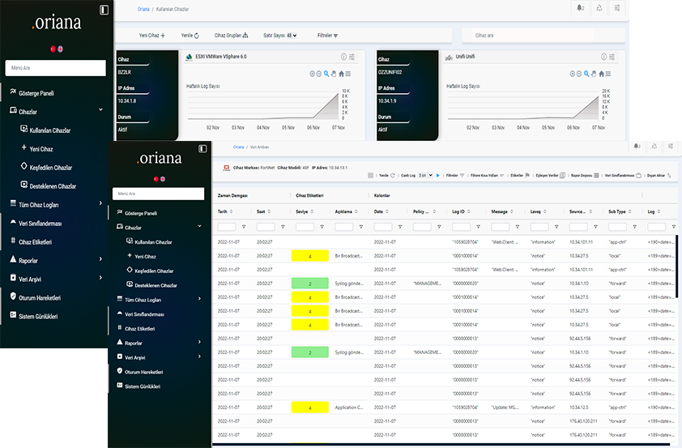

Ağınızı 7/24 İzleyen Siber Göz
Oriana Log üzerinde barındırdığı olayları anlamlaştıran, raporlayan ve ihtiyaç halinde ekrana getiren patent başvurulu dünyanın en hızlı log ürünüdür.
Deneme

Oriana Log üzerinde barındırdığı olayları anlamlaştıran, raporlayan ve ihtiyaç halinde ekrana getiren patent başvurulu dünyanın en hızlı log ürünüdür.
Deneme